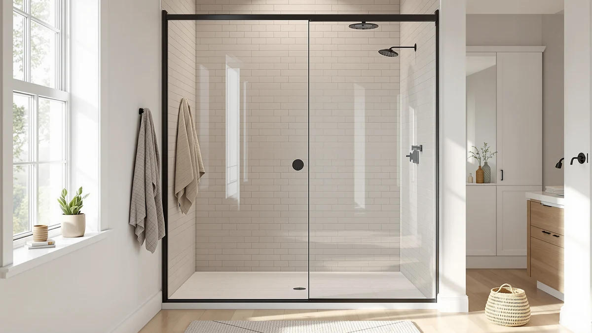

Cost of Sliding Shower Doors (2026)
Prices and picks verified as of September 2026. Independent, reader-supported reviews.


Quick Answer
Across the seven sliding shower doors we compared, the cost of sliding shower doors runs from $251.99 to $499.96 for the door itself, and the gap comes down to glass thickness, hardware finish, and panel height rather than the size of the opening. For most bathrooms, the Aurisal Frameless Stainless Steel Sliding Shower in matte black at $399.99 lands in the middle of that range while still using rust-proof stainless steel hardware and dual tracks built for daily use.
Our pick: Frameless Stainless Steel Sliding Shower, $399.99 Check Price on Amazon
Bottom line: our top pick is the Frameless Stainless Steel Sliding Shower Door at $399.99. The best budget option is the GETPRO Shower Door Double Sliding 57-60 in. W x 72 in. H at $260.07.
Things to Know Before You Buy
- Glass thickness moves the price the most. Most doors here use 1/4" (6mm) tempered glass, while BoBliss steps up to 5/16" (8mm) at $419.99, and that extra thickness is the main reason it costs more than similarly sized competitors.
- Frameless costs more than semi-frameless. Fully frameless doors like the two Aurisal models and BoBliss run $389.99 to $419.99, while the semi-frameless bypass designs from ENSO SENKA and GETPRO drop to $251.99 and $289.00.
- Hardware finish barely changes the price. The same Aurisal door costs $399.99 in matte black and $389.99 in brushed nickel, so finish is mostly a style decision, not a cost decision.
- Height adds to the price bracket. Doors built to 76" tall, like the KPUY at $499.96, the BoBliss at $419.99, and the SHKL at $409.99, sit above the 72"-tall doors in this lineup.
- The price you see is for the door only. None of these prices include professional installation, which most owners add separately if they are not comfortable setting tempered glass panels themselves.
The cost of sliding shower doors typically falls between $250 and $500 once you are looking at real tempered-glass models rather than the flimsiest framed units sold as loss leaders. That is a wide enough range that two doors sized for the same 56-60" opening can be $150 apart for reasons that have nothing to do with how well they fit your bathroom.
We compared seven sliding shower doors that sell in real volume in the US, from the GETPRO at $251.99 up to the KPUY at $499.96, to show where that money actually goes. Our pick for most people is the Aurisal Frameless Stainless Steel Sliding Shower in matte black at $399.99, which pairs 304 stainless steel hardware with 1/4" tempered glass at a price that sits comfortably in the middle of the pack.
Below you will find all seven doors spread across that full price range, along with a breakdown of what pushes a door toward the top or the bottom of it: glass thickness, frame style, hardware, and height. If your bathroom opening is a standard 56-60" alcove, the cost of sliding shower doors should not surprise you once you know which of those four factors you are paying for.
Why You Should Trust Us
Best Shower Doors is run by Ilane Tall, who has spent years writing about bathroom fixtures and renovation costs for a US audience. We do not run a fake testing lab and we do not invent star ratings. What we do is read the actual product listings, cross-check the manufacturer specifications against verified buyer reviews, and pay attention to the details that explain why one sliding shower door costs more than another: glass thickness, hardware material, frame style, and panel height.
Every price in this guide is what the listing charges at the time of writing, and every product is a real listing you can buy today. When a lower-priced door trades away a feature to hit that price, we say so plainly, because understanding the cost of sliding shower doors means understanding what you give up at each price point, not only the number on the tag.
How We Picked
We started with sliding and bypass shower doors that fit the standard 55-60" opening most US bathrooms are built around, then filtered for tempered safety glass and a real adjustable width range so a single door can fit slightly out-of-square walls. We excluded anything without stainless steel or equivalent corrosion-resistant hardware, since a rusting track defeats the purpose of buying a glass door in the first place.
From there we deliberately spread the seven picks across the price range rather than clustering them near a single number. That meant including a semi-frameless bypass door under $260 next to a fully frameless, thicker-glass door near $500, so you can see exactly what an extra $100 or $200 buys instead of guessing.
How We Compared
Because a shower door is a fixed installation rather than a gadget you can return after a week, our comparison is built on specifications and verified owner reviews rather than a staged lab. For each door we compared glass thickness (1/4" versus the thicker 5/16" on the BoBliss), frame style (frameless versus semi-frameless bypass), hardware material, and panel height, then lined those factors up against the price to see which ones actually move the number.
We also read through owner reviews looking for the cost-related complaints that do not show up in a spec sheet, like rollers that need replacing early or seals that leak and force an unplanned repair. A door that is cheaper to buy but needs parts replaced within a year is not the lower-cost option once you count that repair, and we weighted our picks with that in mind.
Our Picks

Frameless Stainless Steel Sliding Shower
What we like
- 304 stainless steel construction resists the rust standard steel hardware develops in a humid bathroom
- Frameless tempered glass gives the borderless look of doors costing $100 or more above its $399.99 price
- Dual-track rollers are built for daily use rather than an occasional guest bathroom
Flaws but not dealbreakers
- At $399.99 it costs roughly $150 more than the cheapest semi-frameless door in this lineup
- 1/4" glass is standard thickness, not the heavier 5/16" panel the BoBliss uses
| Material | — |
| Size | 60"*72"-1/4" |
The Aurisal Frameless Stainless Steel Sliding Shower is our pick for most people weighing the cost of sliding shower doors against what they actually get. At $399.99 for a 60" wide by 72" tall opening, it sits almost exactly in the middle of the seven doors we compared, and it earns the top spot rather than splitting the difference on price alone because of the hardware. Aurisal builds the tracks and rollers from 304 stainless steel, the same grade used in marine and food-service hardware because it resists the rust that ordinary steel develops within a year or two of daily steam exposure.
The 1/4" (6mm) tempered glass is standard thickness for this price tier rather than a premium upgrade, and the frameless design means there is no metal perimeter to interrupt the glass, which is worth roughly $80 to $100 over a similarly sized semi-frameless door if you compare it against the ENSO SENKA or GETPRO in this lineup. The matte black finish also runs about $10 more than Aurisal's own brushed nickel version of the same door, a small premium for a finish that is more forgiving of water spots between cleanings.

KPUY Frameless Shower Door 55-60"
What we like
- 76" tall panel stands four inches above the 72" doors in this lineup, cutting splash at the top
- Explosion-proof nano-coating film adds a layer of protection if the tempered glass ever breaks
- Waterproof seal strip and a stain-resistant coating are built specifically for bathroom humidity
Flaws but not dealbreakers
- At $499.96 it is the most expensive door we compared, roughly double the GETPRO
- The added height and coating do not change the glass thickness, which stays at the standard 1/4"
| Material | — |
| Size | 55-60" W x 76" H |
The KPUY Frameless Shower Door is the most expensive of the seven doors we compared, and the cost of sliding shower doors at this end of the range buys you two things the cheaper options skip: extra height and an added safety layer. At 76" tall, its panel stands four inches above the 72" height common on the rest of this list, which matters if splashing over the top of a shorter door has ever been a problem in your bathroom.
KPUY also applies an explosion-proof nano-coating film over the 1/4" tempered glass, so if the panel ever does break under an impact, the film is designed to hold the pieces together rather than let them scatter. That is a real added-cost feature rather than a marketing label, but it also means you are paying nearly $100 more than our top pick for height and a safety film rather than for thicker glass or upgraded hardware.

ENSO SENKA 56-60" W x
What we like
- At $289.00 it is one of the two least expensive doors in this comparison
- Built-in threshold acts as a water barrier at the base, a feature the pricier frameless doors leave to a separate sweep
- ANSI and SGCC-certified 1/4" tempered glass meets the same safety standard as the more expensive doors here
Flaws but not dealbreakers
- Semi-frameless bypass design keeps a visible metal track, unlike the fully frameless Aurisal and BoBliss doors
- Rails may need to be cut down to fit openings under 56", adding an extra installation step
| Material | — |
| Size | 60" W X 72" H |
The ENSO SENKA is a semi-frameless bypass door that undercuts our top pick by almost $111 while still using ANSI and SGCC-certified 1/4" tempered glass, the same safety certification level as every other door in this roundup. If your main concern with the cost of sliding shower doors is keeping the number down without dropping to the cheapest possible framed unit, this is where that trade-off lands.
The semi-frameless bypass design is the biggest visible difference from the frameless picks: you can see the track hardware rather than a borderless glass panel, and that visible frame is a large part of why it costs less. In exchange, ENSO SENKA builds a threshold into the base that acts as a water barrier, a feature some of the pricier frameless doors leave for you to add separately with a bottom sweep.

GETPRO Shower Door Double Sliding
What we like
- At $251.99 it is the least expensive door we compared, roughly $150 under our top pick
- Double-sliding design lets both panels move, so you can enter from either side or the center
- Reversible left- or right-wall installation gives more flexibility than a fixed single-bypass door
Flaws but not dealbreakers
- Aluminum frame construction keeps costs down but is a step below the stainless steel hardware on the pricier picks
- Two moving panels mean two sets of rollers and tracks to keep clean instead of one
| Material | — |
| Size | 60'' W x 72'' H |
GETPRO's double-sliding door is the lowest-cost option in this comparison at $251.99, which is roughly what you would expect to pay for a semi-frameless bypass door with an aluminum rather than stainless steel frame. The aluminum guide rail is where most of the savings come from compared with the stainless steel hardware on the Aurisal and BoBliss doors, and GETPRO reinforces the top track specifically to resist the bending a lighter frame can be prone to.
Beyond the low number, you get a double-sliding design, meaning both panels move instead of one fixed panel and one sliding panel. That makes it reversible for either a left- or right-wall installation and gives you the option to enter from the center rather than only one side, which is useful in a shared bathroom. The trade-off is two sets of rollers and tracks instead of one, so there is more hardware to keep clean over time.

BoBliss Frameless Sliding Glass Shower
What we like
- 5/16" (8mm) tempered glass is thicker than the 1/4" standard used on five of the other six doors
- Stainless steel hardware and rollers are built for smooth sliding under the added weight of the thicker panel
- Adjustable width trims up to 4" on the stainless steel top guide bar for a closer fit to odd openings
Flaws but not dealbreakers
- At $419.99 it costs about $20 more than our top pick for the extra glass thickness
- The heavier glass panel makes installation more of a two-person job than the standard 1/4" doors
| Material | — |
| Size | 56-60" W x 76" H |
BoBliss is the only door in this comparison built with 5/16" (8mm) tempered glass rather than the 1/4" (6mm) standard the other six use, and that extra thickness is the main reason it costs $419.99, about $20 above our top Aurisal pick. Thicker glass has more mass, which translates into a panel that feels more solid when you slide it and less prone to the slight flex thinner frameless glass can show at its widest point.
The stainless steel hardware and rollers are sized to handle that added weight, and the top guide bar can be trimmed up to 4 inches for a tighter fit against openings that fall short of a full 60". The trade-off for the heavier glass is installation: a 5/16" panel is noticeably harder for one person to lift and hold steady while the track is set, so budget for a second pair of hands regardless of how comfortable you are with a drill.

Frameless Stainless Steel Sliding Shower
What we like
- Same 304 stainless steel construction and dual-track rollers as our top matte black pick
- At $389.99 it is $10 less than the matte black version of the identical door
- Brushed nickel finish blends into more traditional bathroom hardware than matte black does
Flaws but not dealbreakers
- Brushed nickel shows water spots more visibly than matte black between cleanings
- Same standard 1/4" glass as the matte black version, not an upgrade over it
| Material | — |
| Size | 60"*72"-1/4" |
This is the same Aurisal Frameless Stainless Steel Sliding Shower as our top pick, built on the identical 304 stainless steel hardware and dual-track rollers, finished in brushed nickel instead of matte black. It costs $389.99, exactly $10 less than the matte black version, so the finish choice here is essentially free either way.
Brushed nickel is the safer match if your existing bathroom hardware, like your faucet and towel bar, is already nickel or chrome rather than black. The one honest trade-off is maintenance: matte black is more forgiving of hard-water spots between wipe-downs, while brushed nickel shows mineral buildup a bit more readily, so factor a slightly more frequent cleaning routine into the otherwise identical cost of sliding shower doors from this pair.

56-60" W × 76" H
What we like
- 76" height matches the KPUY's tall panel while costing $90 less
- Explosion-proof nano-coating film adds the same safety layer as the pricier KPUY door
- Thickened stainless steel guide rail is built specifically to resist long-term rust in humid rooms
Flaws but not dealbreakers
- At $409.99 it still costs about $10 more than our top pick for the taller panel
- 1/4" glass thickness stays standard rather than stepping up like the BoBliss
| Material | — |
| Size | 56-60'' W x 76'' H - 6mm |
The SHKL is the second tall option in this lineup, matching the KPUY's 76" height while costing $409.99, about $90 less. If the 4 extra inches of height over the 72" doors is the feature you actually want, this is where the cost of sliding shower doors gets more reasonable without dropping back down to a shorter panel.
Like the KPUY, it applies an explosion-proof nano-coating over the 1/4" tempered glass and pairs it with a thickened stainless steel guide rail built for long-term rust resistance in a humid room. The width adjusts across a 4" range, from 56" to 60", by trimming the rail, the same installation approach used across every door in this comparison.
Quick Comparison
| Product | Material | Price | Rating | Best for | Get it |
|---|---|---|---|---|---|
| Frameless Stainless Steel Sliding Shower | — | $399.99 | 4 | Best overall value | View on Amazon → |
| KPUY Frameless Shower Door 55-60" | — | $499.96 | 4 | Best for tall 76" openings | View on Amazon → |
| ENSO SENKA 56-60" W x | — | $289.00 | 4 | Best low-cost frameless-look pick | View on Amazon → |
| GETPRO Shower Door Double Sliding | — | $251.99 | 4 | Lowest price overall | View on Amazon → |
| BoBliss Frameless Sliding Glass Shower | — | $419.99 | 4 | Best for thicker glass | View on Amazon → |
| Frameless Stainless Steel Sliding Shower | — | $389.99 | 4 | Best brushed nickel finish | View on Amazon → |
| 56-60" W × 76" H | — | $409.99 | 4 | Best tall door for less | View on Amazon → |
The Competition
A few categories of door came up in our research on the cost of sliding shower doors but did not make the final seven. Fully framed sliding doors are the cheapest option of all, often well under $200, and if the number on the price tag is your only concern they will technically work. But the thick metal frame around every pane and the extra channels it creates trap more grime than the semi-frameless and frameless doors here, and the look reads as dated next to any of our seven picks.
Custom glass fabrication is the other end of the spectrum. A glass shop can build a frameless enclosure to your exact opening, but that custom work routinely runs into four figures once fabrication and professional installation are included, several times the cost of any door in this comparison. Unless your bathroom has an unusual angle or opening that no off-the-shelf width range can fit, that premium buys precision you probably do not need.
We also looked at pivot and hinged doors, which can offer a wider opening because there is no overlapping panel eating half the width. They are worth considering if your bathroom has the floor space for a door to swing open, but they need that clearance in front of the shower, which is exactly the space constraint that pushes most buyers toward a sliding door in the first place.
Frequently Asked Questions
What is the average cost of sliding shower doors?
Based on the seven doors we compared, the cost of sliding shower doors for a standard 56-60" opening runs from $251.99 to $499.96, with most models landing between $390 and $420. The price difference comes mainly from glass thickness, frame style, and panel height rather than the size of the opening, since all seven doors here fit roughly the same width range.
Does professional installation add much to the cost of sliding shower doors?
Yes, and none of the prices in this guide include it. Every door here is designed to be homeowner-installable, with an adjustable width range and reversible left- or right-hand mounting, but the tempered glass panels are heavy enough, especially the thicker 5/16" BoBliss, that many owners still hire a plumber or handyman for an hour or two of labor rather than handle the glass alone.
Why do frameless sliding shower doors cost more than semi-frameless ones?
A frameless door, like our Aurisal top pick or the BoBliss, has no metal perimeter framing the glass, so the hardware doing the structural work is concentrated in the top track and rollers rather than spread across a full frame. That borderless look and the heavier-duty hardware needed to support it is what pushes frameless doors to $389.99-$419.99 here, compared with $251.99-$289.00 for the semi-frameless bypass doors in this comparison.